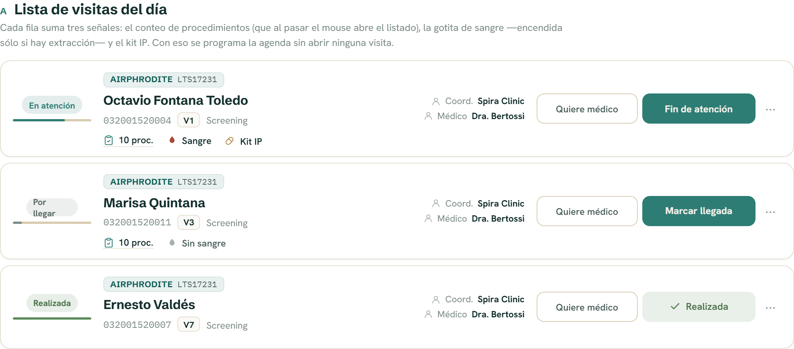
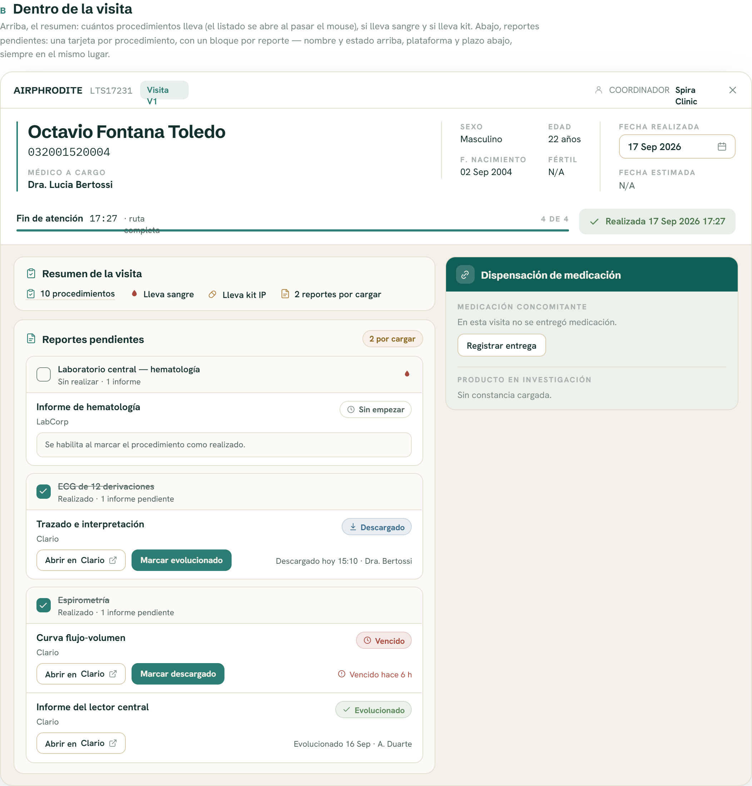
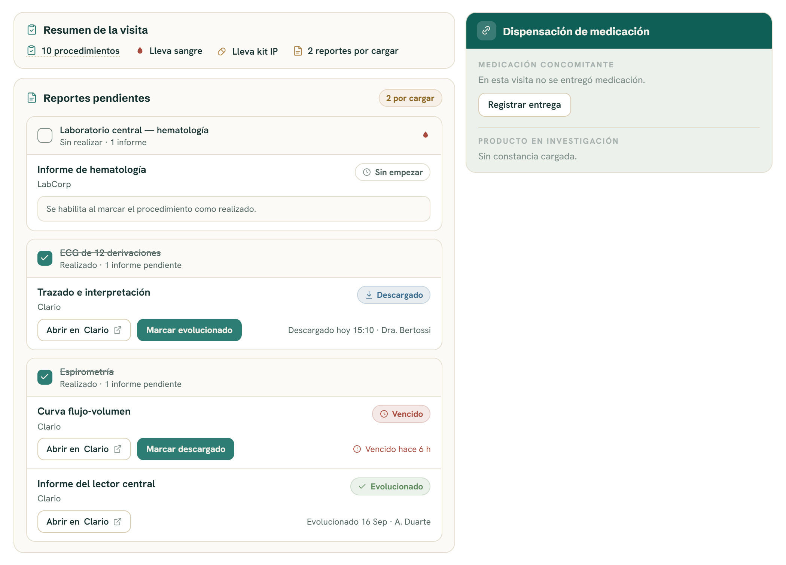

El panel de Procedimientos del modal de visita pasa a contener sólo lo que requiere acción posterior — los procedimientos que dejan informe — y todo lo que la visita “lleva” se resuelve en un resumen nuevo, legible de un vistazo, que también aparece en la lista de visitas del día para programar la agenda sin abrir cada visita.
VisitProcedures.tsx, DayVisitRowItem.tsx, visitAtoms.tsx, reportes/estados.ts| Antes | Ahora |
|---|---|
| Panel “Procedimientos” con los 10 procedimientos de la visita, el reporte escondido en una píldora desplegable. | Panel “Reportes pendientes” con sólo los procedimientos que dejan informe; el reporte, su estado y su acceso siempre visibles. |
| Para saber qué lleva la visita había que abrirla y leer la lista completa. | Panel “Resumen de la visita” arriba del anterior: conteo, sangre, kit IP, reportes por cargar. El listado completo se ve al pasar el mouse. |
| La fila del día no decía nada del contenido de la visita. | La fila suma la misma tira de indicadores en versión compacta. |
| Rótulo propuesto por Dirección: “Procedimientos con reportes pendientes”. | Rótulo final: “Reportes pendientes”. |

Grilla de 4 columnas, align-items:center, gap:16px, padding 12px 16px, radio 14px, borde --spira-line, sombra --spira-shadow-sm:
grid-template-columns: 104px minmax(0,1fr) 206px auto
estado identidad personas accionesLa columna de identidad apila cuatro bloques, en este orden exacto:
margin-bottom:7px) — encabeza la fila: recuadro 20px de alto, radio 6px, fondo #0F5F57 al 9%, borde al 18%, con nombre del estudio en display 11px/700 --spira-primary + protocolo en mono 11px.letter-spacing:-.01em.margin-top:6px, 12.5px, --spira-muted): número de paciente en mono · tag de visita (V1) · semana del cronograma (“Screening”).margin-top:9px) — §4.Columna de estado: el tag va centrado (flex-direction:column; align-items:center) y la barra de progreso ocupa el 100% del ancho de la columna, 3px de alto, radio 2px, riel --spira-line-2.


El cuerpo del modal es una grilla de dos columnas minmax(0,1.18fr) minmax(0,.82fr), gap:14px, align-items:start, padding 16px 18px. La columna izquierda apila Resumen y Reportes pendientes con gap:12px.
El formato es línea: ícono + texto, sin cápsula ni recuadro. La atenuación la carga sólo el ícono; el texto se mantiene legible (nunca por debajo de 4.5:1).
| Indicador | Ícono | Encendido | Apagado | Texto en fila / en modal |
|---|---|---|---|---|
| Procedimientos | clipboard-check | --spira-track | — | 10 proc. / 10 procedimientos |
| Sangre | droplet (relleno) | #A6483B | --spira-faint | Sangre · Sin sangre / Lleva sangre · No lleva sangre |
| Kit IP | pill | #B0823F | no se dibuja | Kit IP / Lleva kit IP |
| Reportes | file-text | #B0823F | --spira-faint | sólo en modal: N reportes por cargar · Reportes al día |
Medidas: ícono 14px, texto 12.5px/600, gap:6px interno, white-space:nowrap. Separación entre indicadores por gap, sin divisores (en la fila 8px 18px, en el modal 10px 20px) — un divisor como ítem de un flex con wrap queda colgando al final de línea.
Si la visita no tiene procedimientos del cuadro, la tira no se dibuja y no se escribe ningún texto de reemplazo. Sin “Sin procedimientos”, sin guión, sin nada.
“10 procedimientos” no es un botón: es texto con border-bottom:1px dotted var(--spira-line-2) y cursor:help, sin chevrón — un chevrón o una cápsula inducen al clic, que no es el gesto. El popup abre con :hover y con :focus-within (accesible por teclado, tabindex="0" + aria-label).
position:absolute; top:calc(100% + 8px), ancho 340px, radio 14px, sombra --spira-shadow-md, max-height:300px con scroll.opacity .13s, transform .13s desde translateY(-4px).Panel estándar: fondo --spira-surface, borde --spira-line, radio 14px, padding 14px 16px. Encabezado: ícono clipboard-check 15px en --spira-track + título display 14px/700. Sin contador de realizados a la derecha.
Cuerpo: la tira de indicadores del §4 con los rótulos largos. Nada más — no lleva aviso de extracción ni recordatorios operativos (“pedir el retiro del courier” se sabe).
Mismo panel estándar, ícono file-text. A la derecha, badge de conteo: alto 24px, radio pill, N por cargar sobre #B0823F al 12% con borde al 30% y texto #8C6520; cuando no queda nada dice Al día en neutro (borde --spira-line, fondo transparente, texto #4A5F5B).
Contiene sólo procedimientos cuyo reports.length > 0, en el orden del cronograma. Una tarjeta por procedimiento (fondo blanco, borde --spira-line, radio 12px, overflow:hidden, separadas por gap:10px), compuesta por una banda de encabezado y un bloque por reporte.
Es un <button role="checkbox" aria-checked> que ocupa el 100% del ancho: toda la banda se toca, no sólo el cuadrito. Fondo --spira-surface, borde inferior --spira-line, min-height:44px, padding 9px 14px, gap:10px.
--spira-muted, fondo transparente. Tildada: relleno --spira-track con check blanco (el check existe siempre, se anima con opacity).text-decoration:line-through (1px, --spira-muted) y color a #4A5F5B. Lo hecho se tacha; lo que falta sigue contado debajo.#4A5F5B, exactamente:
Sin realizar · N informes (total del procedimiento; nunca decir “al día”),Realizado · N informes pendientes,Realizado · informes al día.pendiente, la banda deja de responder (cursor:default) y expone el motivo en title: “Tiene reportes ya avanzados: retrocedé el reporte antes de desmarcarlo.”Padding 11px 14px, separados entre sí por border-top:1px solid var(--spira-line). Jerarquía fija — cada dato tiene siempre el mismo lugar, para que dos reportes del mismo procedimiento no se confundan:
minmax(0,1fr) auto: a la izquierda el nombre del reporte (13.5px/700, es el titular) con la plataforma debajo (11.5px #4A5F5B); a la derecha el tag de estado.margin-top:9px), la fila de acciones: Abrir en {plataforma} + acción de avance, y al final de la línea (margin-left:auto) el plazo o la constancia.Botón de plataforma: alto 30px, radio 9px, borde --spira-line-2, fondo blanco, 12px/600, con ícono external-link 12px. Botón de avance: alto 30px, radio 9px, sin borde, fondo --spira-track, texto blanco 12px/700.
Cuando el procedimiento no está tildado, el bloque no muestra acciones: en su lugar va un aviso (fondo --spira-surface, borde --spira-line, radio 9px, padding 8px 11px, 11.5px) con el texto “Se habilita al marcar el procedimiento como realizado.”
| Estado | Tag | Color | Ícono | Acción visible | Texto de plazo |
|---|---|---|---|---|---|
| procedimiento sin tildar | Sin empezar | neutro: borde --spira-line, texto #4A5F5B | clock | ninguna (aviso) | — |
pendiente | Pendiente | #B0823F | clock | Marcar descargado | “Vence en 2 días” |
pendiente + vencido | Vencido | #A6483B | alert-circle | Marcar descargado | “Vencido hace 6 h” con ícono, en #A6483B |
descargado | Descargado | #3A6B8C | download | Marcar evolucionado | “Descargado hoy 15:10 · Dra. Bertossi” |
evolucionado | Evolucionado | #5C8A5A | check | ninguna | “Evolucionado 16 Sep · A. Duarte” |
Construcción del tag: alto 24px, radio pill, padding 0 9px, texto 11.5px/700, ícono 12px, fondo del color al 12% y borde al 30% (color-mix(in srgb, C 12%, #fff)).
procedimiento tildado ──► pendiente ──► descargado ──► evolucionado
│ │
(vencido si pasó el plazo)Un reporte cuenta como pendiente si el procedimiento está realizado y el reporte no llegó a evolucionado — el mismo criterio que esReportePendiente en reportes/estados.ts. No hay dos números distintos en pantalla: el badge del panel y el indicador del resumen leen la misma función.
const pendientes = reportes.filter(r =>
procedimientos[r.procedure_id].completed && r.stage !== 'evolucionado'
).length;Consecuencia visible: al tildar un procedimiento el conteo sube (aparece trabajo nuevo), y baja sólo al evolucionar.
Hoy el catálogo de procedimientos sólo tiene categoría (Laboratorio, Cardio-respiratorio, Medicación…). El indicador de sangre necesita una definición explícita.
category === 'Laboratorio'. Inmediato, pero marca sangre en laboratorios que no la llevan (por ejemplo orina) y no marca extracciones fuera de esa categoría.draws_blood. Se define una vez por estudio en el cuadro de procedimientos y queda consistente en agenda, fila y modal.El diseño no muestra volumen ni cantidad de tubos: se descartó explícitamente. El indicador es binario.
// protocolProcedures.ts
type ProtocolProcedure = {
procedure_id: string
name: string
category: string
draws_blood: boolean // ← nuevo
reports: ProcedureReport[]
}El resto de los datos del resumen ya existen: el conteo sale de los procedimientos de la visita, “lleva kit IP” de la entrega de producto en investigación, y los reportes del cuadro por visita.
| Token | Valor | Uso en esta pantalla |
|---|---|---|
--spira-track | #2E7D74 | acento del módulo: íconos de panel, casilla tildada, botón de avance |
--spira-primary | #0F5F57 | tag del estudio, banda de Dispensación |
--spira-ink | #14302E | texto principal |
--spira-ink-soft * | #4A5F5B | texto secundario de 11.5–12px (sublíneas, plataforma, plazos) |
--spira-muted | #7C8C87 | bordes de casilla sin tildar, línea del tachado, íconos neutros |
--spira-faint | #A6B0AC | eyebrows e íconos apagados |
--spira-line / -2 | #E4DECF / #D8CBB0 | divisores / bordes de control |
--spira-surface | #FBFAF6 | fondo de panel y de banda de encabezado |
--spira-danger | #A6483B | gota de sangre, vencido |
--spira-warn | #B0823F | kit IP, pendiente, badge de conteo |
--spira-good | #5C8A5A | evolucionado, visita realizada |
--spira-contable | #3A6B8C | descargado (azul de “archivo en mano”) |
* --spira-ink-soft y los --spira-acc-deep-* no están declarados en colors_and_type.css: el prototipo los usa con fallback explícito. Conviene declararlos (--spira-ink-soft:#4A5F5B, --spira-acc-deep-warn:#8C6520, --spira-acc-deep-good:#4A7248, --spira-acc-deep-danger:#A6483B, --spira-acc-deep-track:#2E7D74) antes de implementar.
Tipografía: display Schibsted Grotesk (títulos y nombres), texto Hanken Grotesk (UI), mono IBM Plex Mono (números de paciente, protocolo, horas).
| Lugar | Texto |
|---|---|
| Título del panel | Reportes pendientes |
| Badge del panel | N por cargar · Al día |
| Título del resumen | Resumen de la visita |
| Indicadores (modal) | N procedimientos · Lleva sangre / No lleva sangre · Lleva kit IP · N reportes por cargar / Reportes al día |
| Indicadores (fila) | N proc. · Sangre / Sin sangre · Kit IP |
| Encabezado del popup | Lleva N procedimientos |
| Sublínea del procedimiento | Sin realizar · N informes / Realizado · N informes pendientes / Realizado · informes al día |
| Acciones | Abrir en {plataforma} · Marcar descargado · Marcar evolucionado |
| Reporte no habilitado | Se habilita al marcar el procedimiento como realizado. |
| Desmarcado bloqueado (tooltip) | Tiene reportes ya avanzados: retrocedé el reporte antes de desmarcarlo. |
#4A5F5B o más oscuro (≥4.5:1 sobre blanco y sobre --spira-surface).